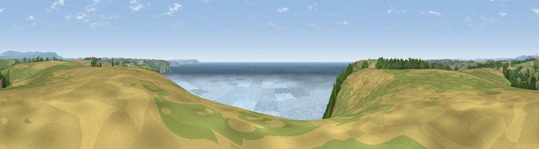

Viewpoint near Mothecombe
#1613 in England · top 4% of its area beats it · near MothecombeWhere it is
The exact computed spot (SX 58275 47425). Click the marker for map links.
The view, rendered

A 360° render of this exact spot computed from the terrain model, tree cover and land cover — summer colours, afternoon light, calibrated against photographs of famous viewpoints. Real trees, hedges and buildings will differ in detail.
The panorama
Grey silhouette: terrain skyline in each direction (720 bearings, Earth curvature and refraction included). Dashed green: skyline with trees (+15 m) and buildings (+8 m) as obstacles. Blue strip: how far the ground is visible on each bearing.
Where the view opens
Wedge length = distance to the farthest visible ground on that bearing (vegetation-aware). Rings at 10, 25 and 50 km.
What fills the view
51% water · 29% grassland · 17% cropland · 4% woodland
Angular shares of the visible panorama (visual magnitude), not map area. Landscape diversity 0.50 (0–1 Shannon).
Key numbers
More beautiful places nearby
The staircase of upgrades: each row has a higher view potential than everything closer. Driving times are estimates from straight-line distance, calibrated against real road routing — check an actual route before setting out.
| Place | Direction | Drive | Score |
|---|---|---|---|
| Viewpoint near Newton Ferrers | WSW · 1 km | ~3 min | 79.5 |
| Western Beacon | NNE · 12 km | ~23 min | 81.9 |
| Viewpoint near Hope | SE · 13 km | ~24 min | 84.4 |
| Viewpoint near East Prawle | ESE · 22 km | ~36 min | 84.6 |
| Pencarrow Head | W · 43 km | ~63 min | 86.0 |
| Viewpoint near Stenalees | W · 59 km | ~81 min | 88.0 |
| Viewpoint near Crackington Haven | NW · 65 km | ~88 min | 88.1 |
| Golden Cap | ENE · 94 km | ~118 min | 88.7 |
50.30969, -3.99173 · source: screening · position refined by local search. Computed location — check access rights before visiting.